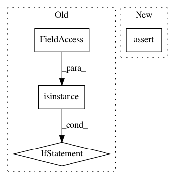

8a2521e08179f42633b04d38bc38509105b55d1b,tests/utils_tests/iterator_tests/test_apply_prediction_to_iterator.py,TestApplyDetectionLink,test_apply_prediction_to_iterator,#TestApplyDetectionLink#,19
Before Change
for vals, dataset_vals in zip_longest(gt_values, dataset_gt_values):
for val, dataset_val in zip_longest(vals, dataset_vals):
if isinstance(dataset_val, np.ndarray):
np.testing.assert_equal(val, dataset_val)
else:
self.assertEqual(val, dataset_val)
testing.run_module(__name__, __file__)
After Change
self.assertEqual(len(gt_values), len(dataset_gt_values))
for gt_vals, dataset_gt_vals in zip(gt_values, dataset_gt_values):
self.assertEqual(list(gt_vals), dataset_gt_vals)
testing.run_module(__name__, __file__)
In pattern: SUPERPATTERN
Frequency: 4
Non-data size: 4
Instances
Project Name: chainer/chainercv
Commit Name: 8a2521e08179f42633b04d38bc38509105b55d1b
Time: 2017-05-31
Author: Hakuyume@users.noreply.github.com
File Name: tests/utils_tests/iterator_tests/test_apply_prediction_to_iterator.py
Class Name: TestApplyDetectionLink
Method Name: test_apply_prediction_to_iterator
Project Name: asyml/texar
Commit Name: af461df627ef660d1a71b6981dedb4e4b504ba9a
Time: 2017-09-25
Author: junxianh2@gmail.com
File Name: txtgen/modules/connectors/connectors.py
Class Name: StochasticConnector
Method Name: _build
Project Name: maciejkula/spotlight
Commit Name: daa722049a256a6389ee4892cd873e5fcfb9a4ba
Time: 2018-05-29
Author: nicolai.tesela@gmail.com
File Name: tests/test_evaluation_metrics.py
Class Name:
Method Name: test_sequence_precision_recall
Project Name: aleju/imgaug
Commit Name: b0f5220c429de3161b410378ecad277c3a50bf46
Time: 2019-08-13
Author: kontakt@ajung.name
File Name: imgaug/random.py
Class Name:
Method Name: polyfill_random